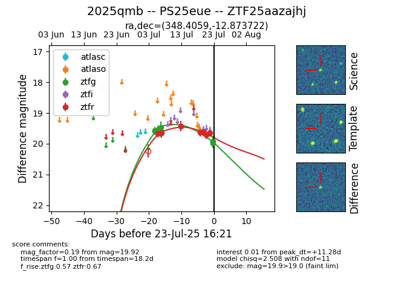

Target ZTF25aazajhj at 2025-07-23 16:21, see:
FINK: fink-portal.org/ZTF25aazajhj
Lasair: lasair-ztf.lsst.ac.uk/objects/ZTF25aazajhj
ALeRCE: alerce.online/object/ZTF25aazajhj
TNS: wis-tns.org/object/2025qmb
YSE: ziggy.ucolick.org/yse/transient_detail/2025qmb
alt names
ZTF25aazajhj (ztf,fink)
2025qmb (tns,yse)
PS25eue (panstarrs)
coordinates:
equatorial (ra, dec) = (348.4059,-12.87372)
galactic (l, b) = (60.0148,-63.04760)
photometry
last ztfg=19.92, ztfr=19.64
8 ztfg, 7 ztfr detections
